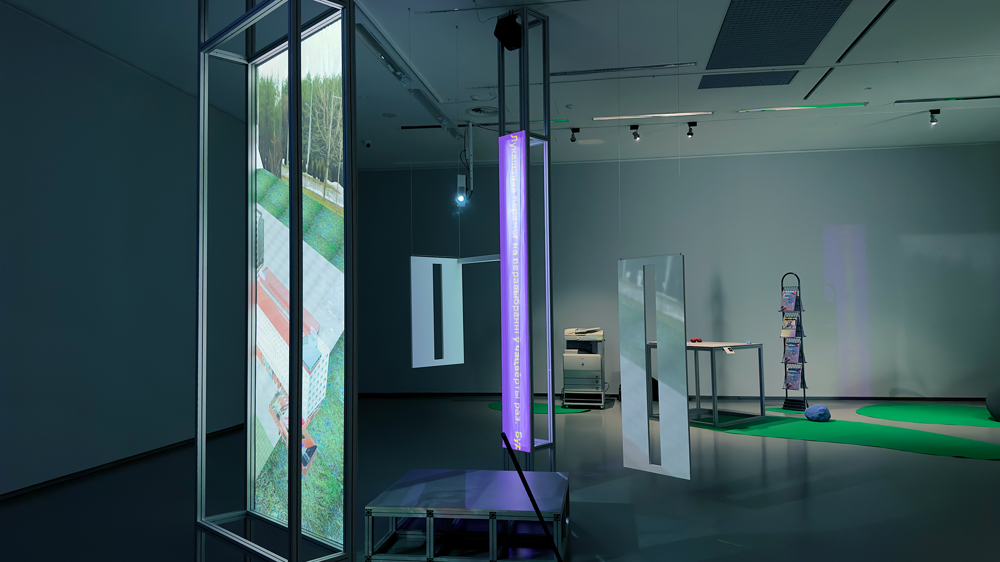

Loading... use arrows to navigate
Intro by XYANA
Excursion around High technology park was inspired by the work of Hélio Oiticica and the Tropicália movement. Tropicália emerged as a form of protest against Brazil's repressive military government, which had imposed strict limitations on artistic expression. Oiticica's installations sought to awaken visitors' senses and inspire their emotions through vibrant structures, which were informed by the favelas of Rio de Janeiro. Rather than adhering to the government's strict regulations, Oiticica believed in the transformative power of simply spending time with others.
The structures of the “Excursion around High Technology Park” is inspired by the deconstructed architecture of the Akademharadok (city of science), where underground gatherings were held. Gradually many events around the city of Minsk organised by the alternative scene were targeted by police. In 2020, during the protests, social gatherings by the wider public in the neighbourhood yards were prevented. This gatherings were the main point of police attention, because the revolutionary power of informal socialising was obvious.
In the multimedia installation Excursion around High Technology Park, XYANA summarises their research on particular topographies of Minsk, which nowadays mostly belong to a High Technology Park (HTP). Besides offices of various IT companies and start-ups, this location includes the Museum of Stones, an open-air geological museum and recreation zone, and the Academy of Sciences facilities, some of which were abandoned and have been used for raves and punk concerts since the early 2000s. Since 2005, these facilities have been partly redeveloped into the HTP, a state project that generates tax revenue and a legal structure for the development of IT technologies in Belarus. Initially based on the idea of outsourcing highly professionalised IT labour to a much cheaper workforce in Belarus, it became a cluster of several hundred companies operating extraterritorially and performing research on AI, software, gaming and apps for health and finance sectors, including cryptocurrency and blockchain research. At the same time, it also remains under strict ideological control and its administration is subordinated to the state. In 2020, the site became one of the key spaces in the topography of protests. Many IT workers took part in the protests and developed various tech solutions for alternative voting systems, political mobilisation and solidarity actions. Mixing various visual artefacts, 3D renders, IT work, political protests and stories of protagonists who were involved in the punk and rave subcultures, XYANA leads a guided tour through the history of the HTP, trapped in the historical and contemporary contradictions of emancipation and control.
by curators of the If disrupted, It becomes tangible Aleksei Borisionok & Antonina Stebur
Credits: -Joshua Owen - 3D model of HTP, assistance with exh installation- -Anderson Asteclines - assistance with architecture- -Antonio Ribeiro Hofmeister - mapping consultant-


2023-- if disrupted, it becomes tangible- 31 mar - 17 jun - the national gallery of art, lithuania
2021-- our porous limits - april 2021 - spedition, bremen
COAPPARATION I, II, III, 2022